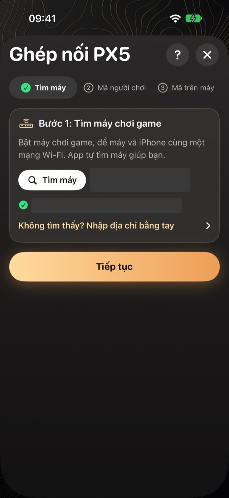
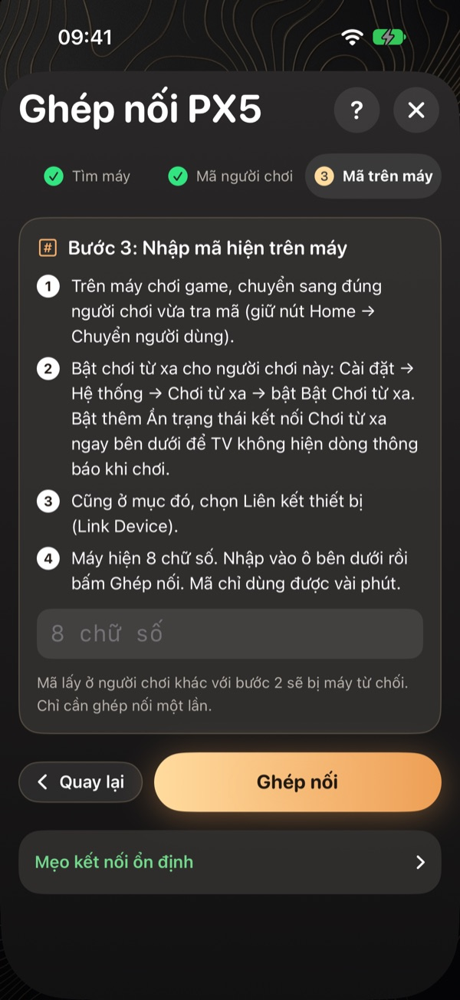

Hướng dẫn kết nối app Console Translator với PS5 từng bước
Cập nhật ngày 3/11/2026
Để kết nối, bạn tạo một tài khoản phụ trên PS5, bật Chơi từ xa, lấy mã người chơi rồi nhập mã 8 số từ PS5 vào app. Việc này chỉ làm một lần.
Các màn hình dưới đây lấy từ bản iPhone. Bản Android làm tương tự, chi tiết có trong hướng dẫn Android.
Bước 1: Tạo tài khoản phụ trên PS5
Ở màn hình chính PS5, chọn ảnh đại diện, Chuyển người dùng, rồi Thêm người dùng. Đăng nhập bằng một tài khoản PlayStation khác. Tài khoản này chỉ để kết nối, không cần mua game hay PS Plus.
Nếu dùng chung tài khoản đang cầm tay cầm, tay cầm sẽ bị ngắt khi app kết nối.
Bước 2: Bật Chơi từ xa
Ở tài khoản phụ, vào Cài đặt, Hệ thống, Chơi từ xa. Bật Chơi từ xa cho đúng tài khoản phụ, rồi bật Ẩn trạng thái kết nối Chơi từ xa.

Bước 3: Tìm máy trong app
Để điện thoại và PS5 chung một Wi-Fi ở nhà, tắt VPN. Mở app, chọn Ghép nối máy chơi game và cho phép quyền Mạng cục bộ nếu được hỏi.

Bước 4: Lấy mã người chơi
Trên PS5, vào Hồ sơ để xem Online ID. Mở id.kyozx.cloud, nhập Online ID, sao chép đủ mã rồi dán vào app.

Bước 5: Ghép nối bằng mã 8 số
Trên PS5, vào Cài đặt, Hệ thống, Chơi từ xa, Ghép nối thiết bị. Nhập ngay 8 chữ số vào app rồi chọn Ghép nối.


Nên bật thêm: tự mở PS5 khi đang nghỉ
Vào Cài đặt, Hệ thống, Tiết kiệm điện, Tính năng khi nghỉ. Bật giữ kết nối Internet và cho phép bật PS5 qua mạng. Khi PS5 ở chế độ nghỉ, app có thể tự đánh thức máy.
Câu hỏi thường gặp
Vì sao PS5 từ chối mã ghép nối?
Thường do mã người chơi thuộc tài khoản khác với tài khoản đang chọn trên PS5. Chuyển đúng tài khoản phụ, lấy mã 8 số mới rồi nhập lại.
Tay cầm bị tắt khi app kết nối có sao không?
Đó là cách PS5 hoạt động. Bấm nút giữa tay cầm rồi chọn người chơi của bạn, khác với tài khoản phụ mà app đang dùng.
Lần sau có phải ghép lại không?
Không. Bạn chỉ cần mở app và kết nối.
Xem thêm
Xem hướng dẫn cài đặt →Console Translator là dự án độc lập, không liên kết với Sony, LG hay Samsung. Tên game và nhãn hiệu thuộc về chủ sở hữu tương ứng.